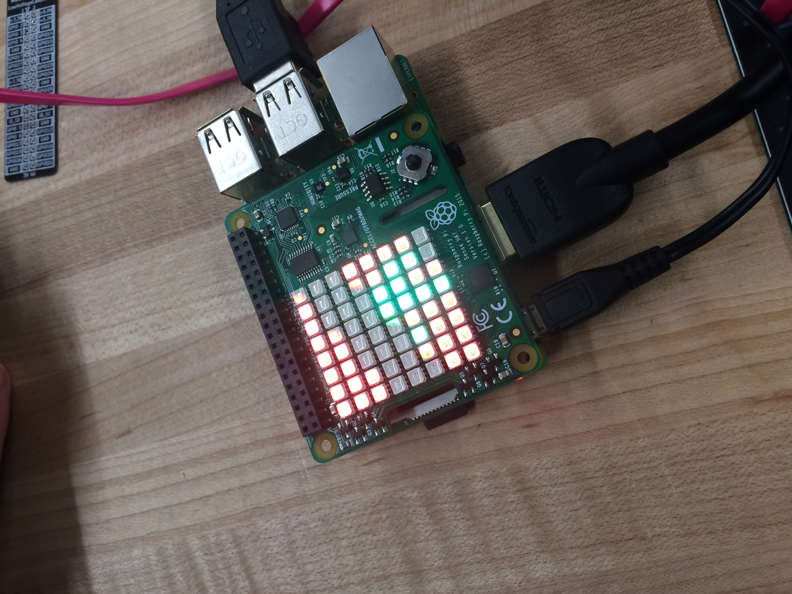
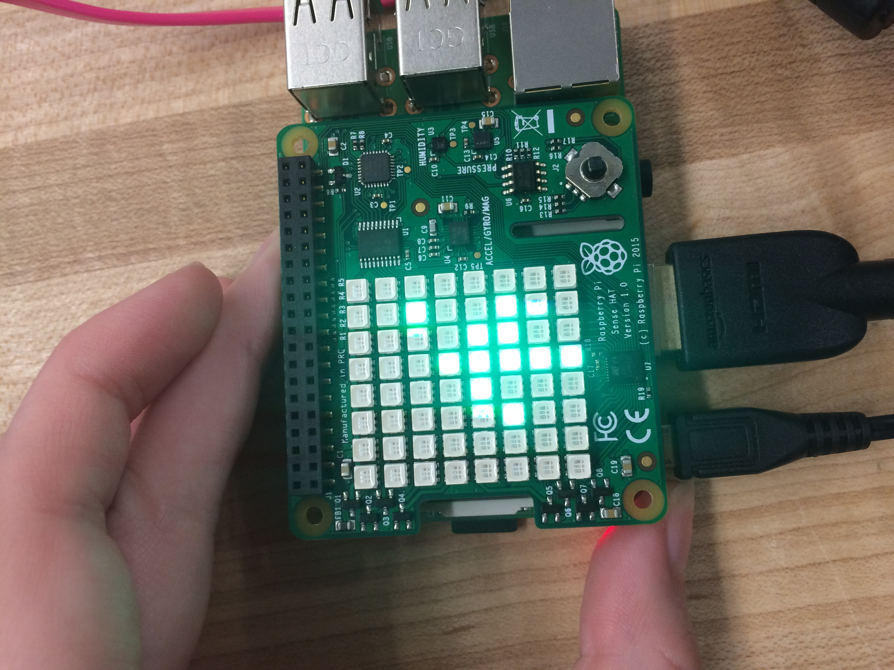

We connected rasberry pi's to computer monoters and coded using python and a few other codes. We added a led to the pi and made our own designs. I tried to make a plant design but it didn't work a planed but still worked. We also played games such as minecraft.
 